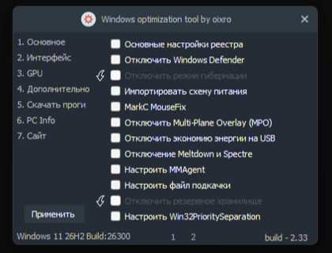
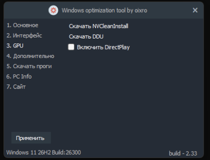
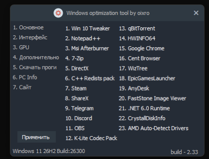

Основное
Реестр, Defender, схема питания, MPO, USB, Spectre/Meltdown, файл подкачки.
Windows optimization tool by oixro
Последняя версия: —
WOTBO содержит 48 твиков в шести разделах: настройки реестра, интерфейс, GPU, дополнительная очистка, установка программ и информация о ПК. Всё применяется и откатывается в пару кликов.

Реестр, Defender, схема питания, MPO, USB, Spectre/Meltdown, файл подкачки.

HDCP, настройки NVIDIA, Ansel, DirectPlay и установка NV CleanInstall с DDU.

23 программы в один клик: 7-Zip, OBS, Discord, Telegram, Chrome, HWiNFO и другие.
Шесть разделов программы — от низкоуровневых настроек системы до установки софта.
Исходный код открыт, поэтому работа программы полностью прозрачна.
Программа полностью бесплатна и создаётся на добровольной основе.
Большинство настроек из платных решений по оптимизации Windows — в одном месте.
Видео о настройке и использовании программы.